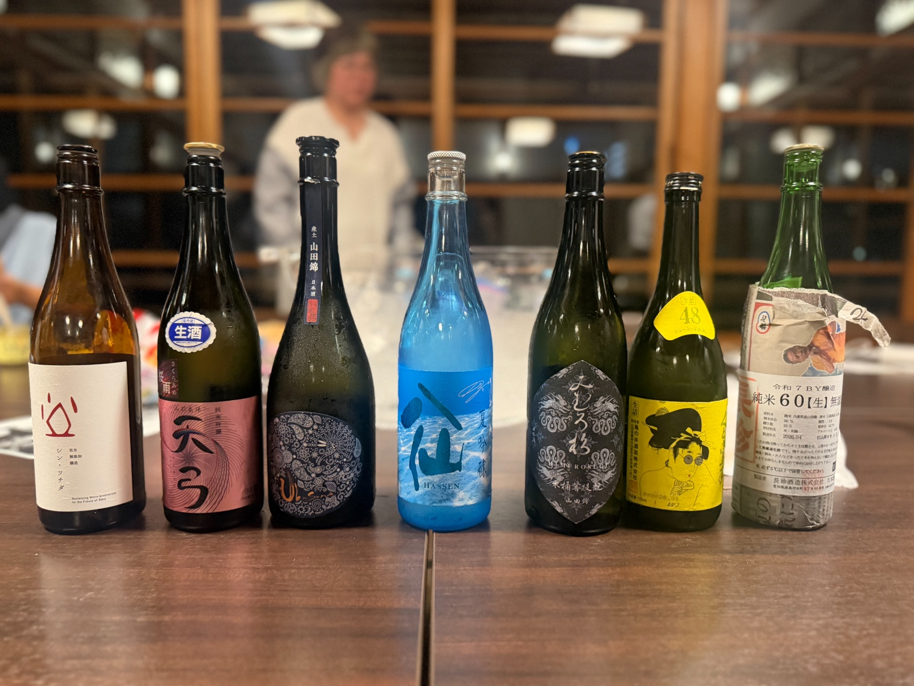
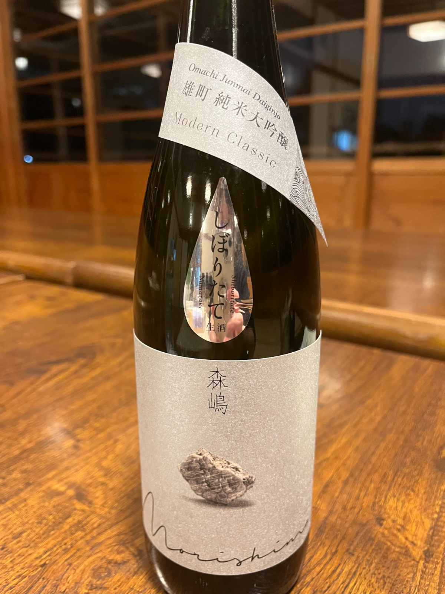
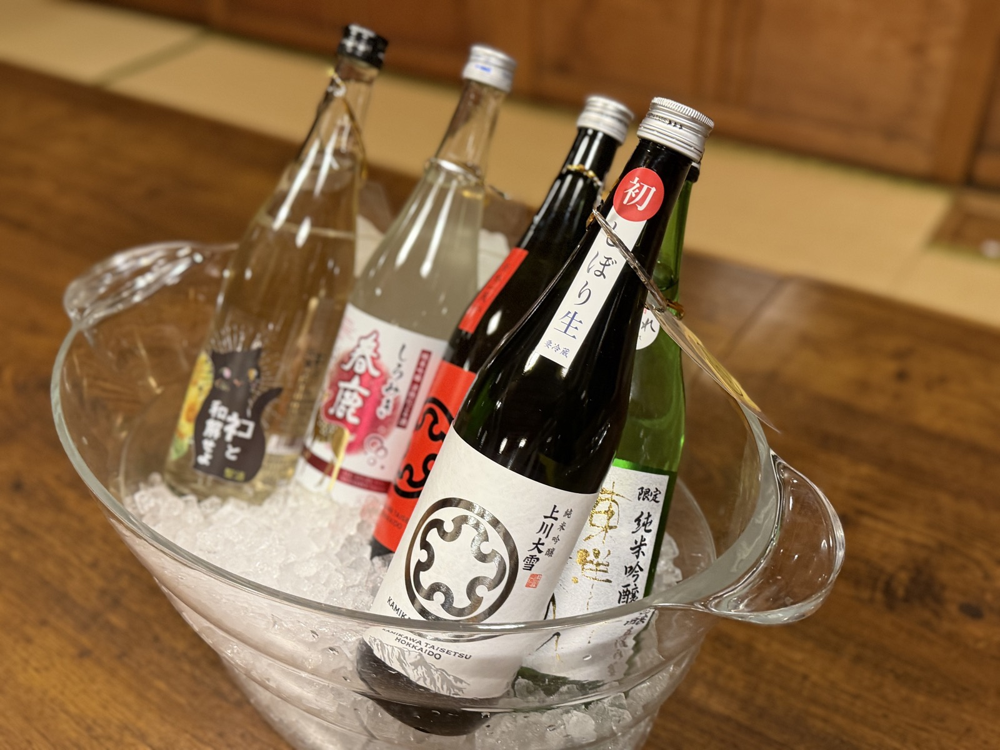

REPORTS
清澄庭園 涼亭で開いた各回の様子、その日のチャンピオン、持ち寄った日本酒の記録です。

清澄庭園 涼亭 ／ 弁当：升本 月替わり弁当
👑 産土（92.4点）

清澄庭園 涼亭 ／ 弁当：人形町今半
👑 天賦（92.8点）

清澄庭園 涼亭 ／ 弁当：銀座割烹 里仙
👑 上川大雪 しぼり生（90.5点）
👑 天美 にごり生（86.8点）
清澄庭園 涼亭 ／ はじまりの会
日本酒の会のはじまり